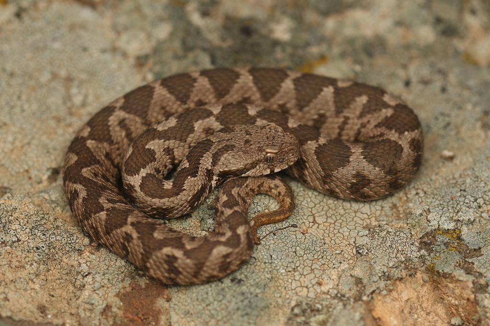
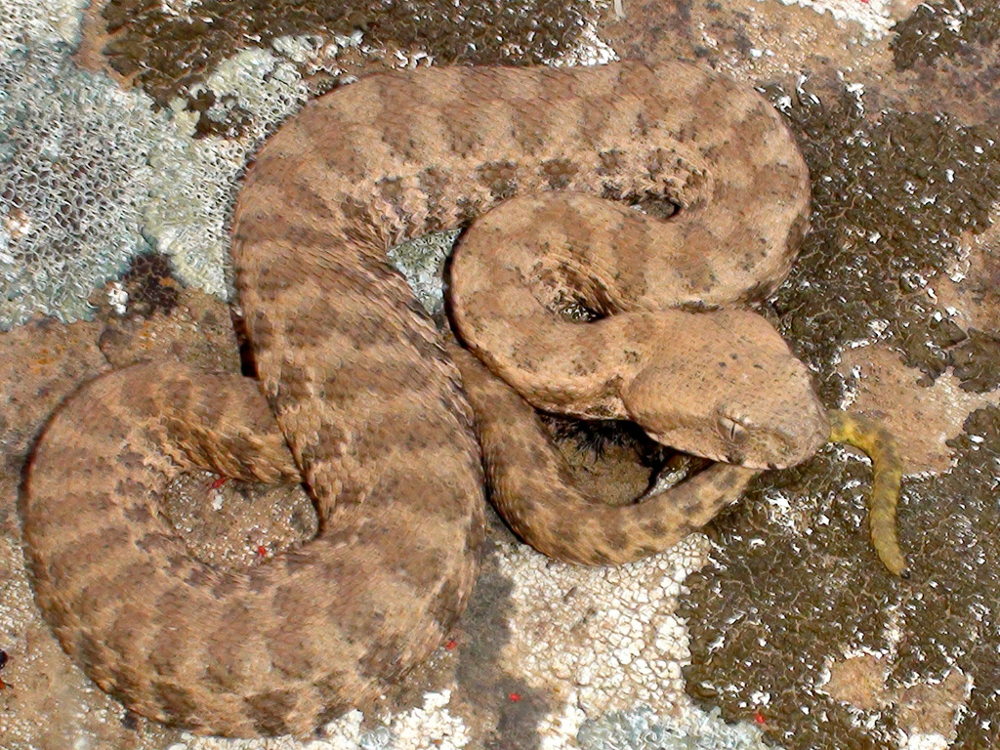
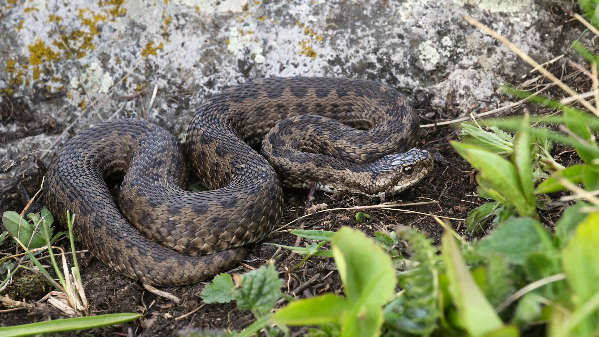
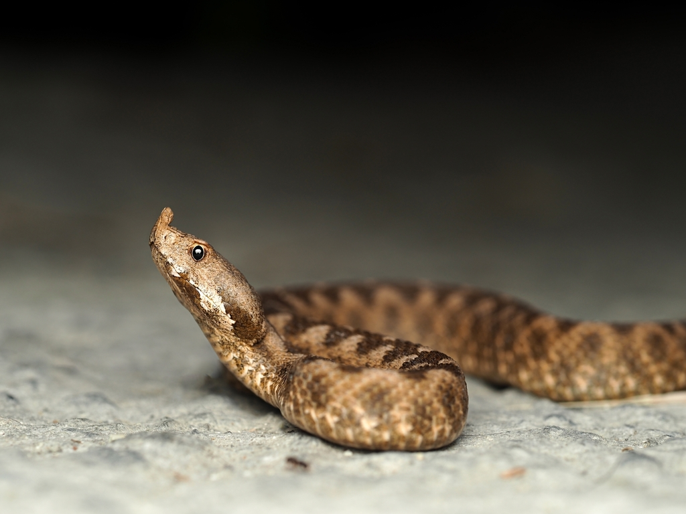
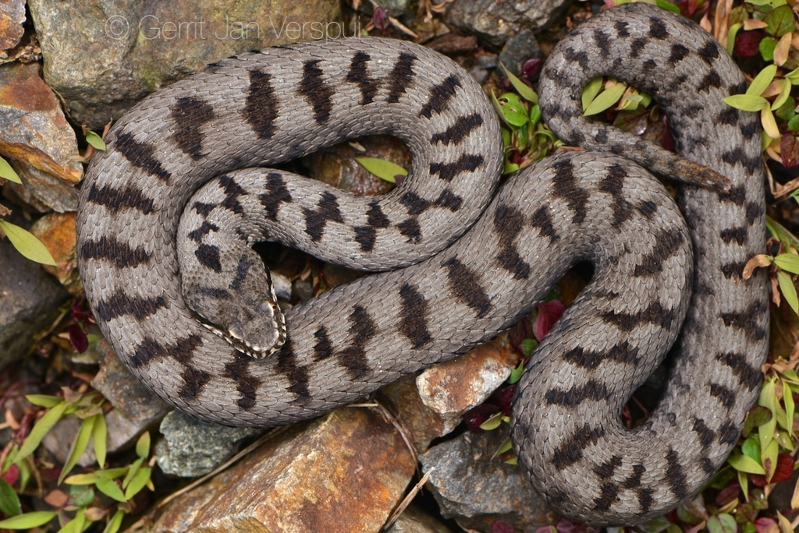
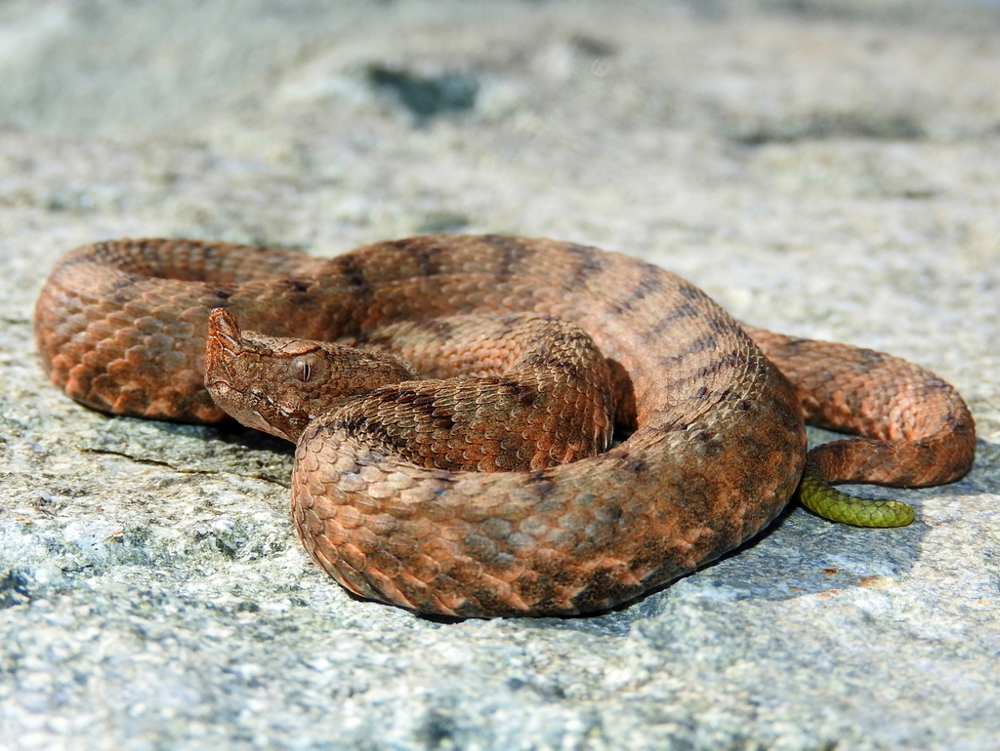

Hoş Geldiniz
Bu site, Türkiye coğrafyasında yaşayan yılan türlerini, davranışlarını ve ekolojik önemlerini tanıtmak amacıyla hazırlanmıştır.
Türkiye'nin Zehirli Engerekleri

1- Şeritli Engerek (*Montivipera xanthina*)
Şeritli engerek, Türkiye ve Yunanistan coğrafyasına özgü, oldukça dikkat çekici bir zehirli engerek türüdür...
Yaşam Alanı (Habitat)
Bu tür, özellikle kayalık yamaçları, taşlık bölgeleri ve çalılık alanları tercih eder...

2- Koca Engerek (*Macrovipera lebetina*)
Koca engerek, Türkiye'nin en büyük ve en iri yapılı engerek türlerinden biridir. Oldukça güçlü bir zehir yapısına sahip olup, genellikle sakin ancak tehlike anında son derece agresif bir tutum sergileyebilir.
Yaşam Alanı (Habitat)
Geniş bir yaşam alanına sahiptir; kayalık yamaçlar, taşlık araziler, çalılıklar ve bazen tarım alanları ile bahçelerde gözlemlenebilir. Kurak ve yarı kurak bölgelere mükemmel adaptasyon sağlamıştır.

3- Ağrı Engereği (*Montivipera raddei*)
Ağrı engereği, Türkiye'nin doğu bölgelerinde yaşayan, oldukça nadir ve estetik desenlere sahip bir engerek türüdür. Renkleri, yaşadığı bölgenin toprak ve kaya yapısıyla mükemmel bir kamuflaj sağlar.
Yaşam Alanı (Habitat)
Genellikle yüksek rakımlı kayalık bölgelerde, dağlık alanların yamaçlarında ve serin yerlerde bulunur. Zorlu iklim koşullarına karşı oldukça dayanıklı bir türdür.

4- Çoruh Engereği (*Vipera darevskii*)
Çoruh engereği, Türkiye'nin kuzeydoğusundaki dar bir coğrafyada yaşayan, oldukça küçük yapılı ama bir o kadar özgün bir engerek türüdür. Renk tonları, yaşadığı bölgenin kayalık yapısına tam uyum sağlar.
Yaşam Alanı (Habitat)
Daha çok yüksek rakımlı, kayalık ve taşlık alanlarda gözlemlenir. Bölgenin serin ve nemli mikro klima özelliklerini tercih eden, hassas bir türdür.

5- Küçük Engerek (*Vipera ursinii*)
Küçük engerek, isminden de anlaşılacağı üzere oldukça ufak yapılı bir türdür. Türkiye'deki engerekler arasında en az zehirli ve en zararsız kabul edilenlerden biridir, ancak yine de doğada temkinli yaklaşılmalıdır.
Yaşam Alanı (Habitat)
Genellikle yüksek rakımlı dağ çayırlarında ve alpin çayırlarda yaşar. Düşük sıcaklıklara dayanıklı olması, onu yüksek dağ ekosistemlerinin vazgeçilmez bir parçası yapar.

6- Burunlu Engerek (*Vipera ammodytes*)
Burunlu engerek, burnunun ucundaki karakteristik yumuşak çıkıntı sayesinde diğer türlerden kolayca ayırt edilir. Avrupa ve Türkiye'nin en zehirli yılanlarından biri olarak bilinir, bu nedenle oldukça dikkatli olunmalıdır.
Yaşam Alanı (Habitat)
Kayalık yamaçları, kuru taşlık alanları ve çalılıkları çok sever. Genellikle güneşlenmeyi tercih ettiği için günün sıcak saatlerinde taşların üzerinde görülebilir.

7- Kafkas Engereği (*Vipera kaznakovi*)
Kafkas engereği, özellikle gövdesindeki canlı renkleri ve karakteristik siyah desenleri ile dikkat çeken, oldukça nadir ve koruma altında olan bir engerek türüdür.
Yaşam Alanı (Habitat)
Genellikle Doğu Karadeniz bölgesinin nemli ve ormanlık alanlarında, dere kenarlarında ve yamaçlarda yaşar. Diğer engerek türlerine göre nemli ortamları daha çok tercih eder.

8- Baran Engereği (*Vipera barani*)
Baran engereği, Türkiye'ye endemik olan (sadece bizim coğrafyamızda yaşayan) nadir bir engerek türüdür. Renk ve desen yapısı ile bulunduğu ortamda mükemmel bir gizlenme yeteneğine sahiptir.
Yaşam Alanı (Habitat)
Daha çok kuzeybatı Anadolu'nun yüksek ve nemli ormanlık bölgelerinde, bazen de açık yamaçlarda ve taşlık alanlarda yaşar. Çevresel faktörlere karşı oldukça hassas bir türdür.

9- Çayır Engereği (*Vipera pontica*)
Çayır engereği, Türkiye'nin Karadeniz bölgesine özgü, diğer türlere kıyasla daha kısıtlı bir alanda yaşayan nadir bir türdür. Vücut yapısı ve renk geçişleri, yaşadığı bölgenin toprak örtüsüyle büyük benzerlik gösterir.
Yaşam Alanı (Habitat)
İsminden de anlaşılabileceği gibi, dağlık kesimlerdeki nemli çayırlar, orman açıklıkları ve yüksek rakımlı düzlüklerde vakit geçirmeyi tercih eder.

10- Wagner Engereği (*Vipera wagneri*)
Wagner engereği, özellikle Doğu Anadolu'nun yüksek dağlık bölgelerinde yaşayan, oldukça kısıtlı bir yayılım alanına sahip ve nesli tehlike altında olan çok özel bir engerek türüdür.
Yaşam Alanı (Habitat)
Yüksek rakımlı, kayalık ve taşlık alanları, özellikle volkanik kayaçların bulunduğu yamaçları tercih eder. Soğuk ve sert iklim koşullarına karşı oldukça dirençlidir.

11- Kafkas Burunlu Engereği (*Vipera kaznakovi*)
Kafkas burunlu engereği, özellikle Doğu Karadeniz ve Kafkasya'nın yüksek kesimlerinde yaşayan, çarpıcı renk tonları ve desenleriyle bilinen, oldukça nadir ve özel bir türdür.
Yaşam Alanı (Habitat)
Genellikle nemli orman zeminlerini, dere kenarlarını ve sık bitki örtüsüne sahip yamaçları tercih eder. Nemli ortamları sevmesi onu diğer engerek türlerinden ayıran temel özelliklerinden biridir.

12- Anadolu Engereği (*Montivipera xanthina*)
Anadolu engereği, geniş bir yayılım alanına sahip, Türkiye'nin en karakteristik engerek türlerinden biridir. Güçlü yapısı ve belirgin desenleri ile bulunduğu ortama kolayca uyum sağlar.
Yaşam Alanı (Habitat)
Genellikle kayalık yamaçları, taşlık bölgeleri, eski duvarları ve çalılık alanları tercih eder. İnsan yerleşimlerine yakın bölgelerde de zaman zaman gözlemlenebilir.

13- Filistin Engereği (*Daboia palaestinae*)
Filistin engereği, özellikle bölgedeki tarım alanları ve insan yerleşimlerine yakın bölgelerde sıkça görülebilen, zehirli ve oldukça uyumlu bir türdür. Beslenme konusunda oldukça çeşitli bir menüye sahiptir.
Yaşam Alanı (Habitat)
Tarım arazileri, zeytinlikler, taşlık alanlar ve çalılıklar en sevdiği mekanlardır. İnsan etkileşiminin olduğu bölgelere adaptasyon yeteneği oldukça yüksektir.